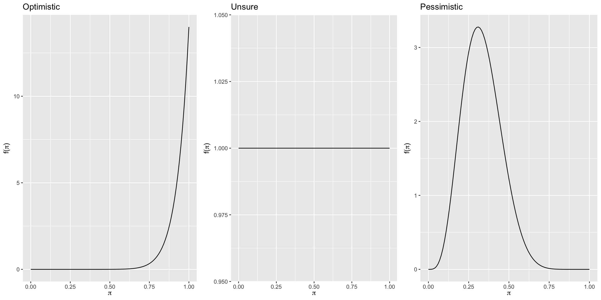
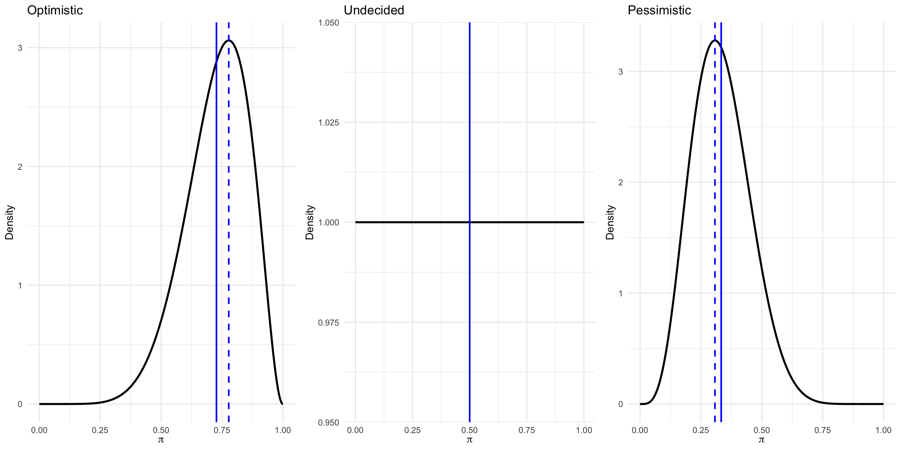

library(tidyverse)
library(bayesrules)
library(gridExtra)CNN vs. The Onion - Beta Binomial
Activity Introduction
The goal of this activity is to explore how prior beliefs, what we think is probable before seeing any data, can influence the conclusions we draw after seeing new evidence: our posterior beliefs. To make things interesting, we will use a quiz where you’ll try to tell whether a headline came from CNN (a real news site) or The Onion (a fake, satirical news site).
Before taking the quiz, you’ll think about how many headlines you expect a person might guess correctly, and you’ll turn that guess into a prior model, or starting point for your beliefs. Then, you’ll update your beliefs using data from actual quiz results and arrive at a posterior model. You will compare three different prior models representing other beliefs: someone expecting a person to guess most answers correctly (optimistic), someone undecided (no prior knowledge) about whether a person will guess many right or wrong (undecided), and someone expecting to guess most answers incorrectly (pessimistic) about how many answers they will get correct in the game.
Learning objectives
By the end of the activity you’ll be able to:
Construct prior and posterior models
See how models update when we get new information
Make and interpret plots of different prior and posterior models
Calculate and compare summary statistics like the mean, mode, and standard deviation of these models.
Let’s dive in and see how well we can guess the news from fiction and learn about Bayesian thinking along the way!
CNN vs The Onion
CNN (the Cable News Network) is widely considered a reputable news source. The Onion, on the other hand, is (according to Wikipedia) “an American news satire organization. It is an entertainment newspaper and a website featuring satirical articles reporting on international, national, and local news.” Another way of putting it - The Onion is “fake news” for entertainment purposes.
In this exercise you will assess people’s ability to determine real news stories published on cnn.com from fake news stories published on theonion.com.
Packages
Code Set Up
Run this set up code to load the functions from the
bayesrules package first. There is no need to understand this code.
The package Bayes Rule is not available in the webr server at this time, so we will include the functions here.
Priors
The CNN vs. The Onion quiz consists of 15 questions. Each question has the same possible answers: CNN or The Onion. Before we take the quiz, think about what proportion of questions you expect someone to guess correctly on the quiz. You might think about a person’s ability to determine fact from fiction or their familiarity with CNN and The Onion.
Let \(\pi\) be the proportion of correct answers a person guesses right in the CNN vs the Onion quiz. Keeping that number in mind, let’s explore in the table below, three different priors for \(\pi\)
| Optimistic | Undecided | Pessimistic |
|---|---|---|
| Beta(8, 3) | Beta(1, 1) | Beta(5, 10) |
Why do we use the Beta distribution?
The Beta distribution is commonly used as a prior for proportions because it is defined on the interval \([0, 1]\), just like any probability.
Its two shape parameters \(\alpha\) and \(\beta\) can be interpreted as representing prior pseudo-observations:
- \(\alpha - 1\): prior successes
- \(\beta - 1\): prior failures
These shape parameters not only determine the mean of the distribution (calculated as \(\alpha / (\alpha + \beta)\) but also control its skewness and informativeness.
Different values for \(\alpha\) and \(\beta\) lead to different shapes, skewness, and central tendencides of the Beta distribution. See if you can pick out some general patterns with the relationship between \(\alpha\) and \(\beta\) in the plot below:

Questions
What happens when:
\(\alpha > \beta\)
\(\alpha < \beta\)
\(\alpha = \beta\)
What happens as \(\alpha\) and \(\beta\) get larger and further apart?
Answers
Skewness and Symmetry
If \(\alpha < \beta\), the distribution is right-skewed, suggesting a belief that the proportion is likely to be low (e.g.,
Beta(1, 5)).If \(\alpha > \beta\), the distribution is left-skewed, placing more weight on higher proportions (e.g.,
Beta(5, 1)).If \(\alpha = \beta\), the distribution is symmetric and centered at 0.5 (e.g.,
Beta(5, 5)).
The further apart \(\alpha\) and \(\beta\) are, the more skewed the distribution becomes. Symmetric models like Beta(20, 20) or Beta(5, 5) show increasingly narrow concentration around the mean as the total number of pseudo-observations \(\alpha + \beta\) increases.
Plotting the Priors

Where does your prior fall?
Returning to your own prior, replace my_alpha and my_beta with the \(\alpha\) and \(\beta\) from your prior distribution.
Looking at the graph of your prior, which person is your prior most similar to: Optimistic, Undecided or Pessimistic?
Vocabulary
We often describe priors in terms of how much information they give about the unknown variable. Priors are often described as:
Informative prior: An informative prior reflects specific information about the unknown variable with high certainty (i.e. low variability).
Vague (diffuse) prior: A vague or diffuse prior reflects little specific information about the unknown variable. A flat prior, which assigns equal prior plausibility to all possible values of the variable, is a special case.
Let’s take a look at a highly informative prior from someone who is very optimistic about individuals getting answers correct.
Reflection:
Referring to your Reflection handout, write down your answers to the following questions:
- What do you notice about the very optimistic prior. Is it more informative? What do you notice about the plot?
- How would you classify your prior? Is it informative or vague? Why?
Updating with data
Based on observed data, we will update our posterior understanding using the four prior models and our own prior model. We will do this with our own score, our neighbor’s scores, and the class or dataset score.
Next, we calculate the summary statistics for the prior and posterior for all four priors using the function
summarize_beta_binomial:
summarize_beta_binomial
summarize_beta_binomial(alpha, beta, y = NULL, n = NULL)function summarizes the mean, mode, and variance of the prior and posterior Beta models of \(\pi\).Arguments:
alpha, beta: positive shape parameters of the prior Beta modely: number of successesn: number of trials
Next, we plot the prior, likelihood, and the posterior for all four people.
Lastly, we examine the effect of different priors on the posterior.
Take the quiz
Let’s take the quiz and add our data to the dataset of trials and successes for a person taking this quiz.
Each of you will take a quiz consisting of 15 questions. Each question has the same possible answers: CNN or The Onion. You can take the quiz through our google form:
Note down how many you get correct. We will compare this with our neighbors and pool data from the class.
Adding data
Choose the priors that interest you and we will update them as follows below:
- Add your quiz data
Let’s update the prior model with some data. Add the number you got correct and enter your prior from before. Your n column should be 15 to reflect that you answered 15 questions.
- Compare with your classmates
Let’s now update your prior with your classmate to your left’s score. Your
ncolumn should now be 30 to reflect the two quizzes.Let’s now update your prior with your classmate to your right’s score. Your
ncolumn should now be 45 to reflect the three quizzes.
- Finally, we will compare to the full class data. This will require tallying all the scores from all students.
Calculating the summary statistics and plotting the distribution
The Optimist
Undecided
The Pessimist
Very Optimistic
Your prior
Compare to your class or to our dataset
student question correct year institution
1 1 1 1 2010 Colby
2 1 2 1 2010 Colby
3 1 3 1 2010 Colby
4 1 4 0 2010 Colby
5 1 5 1 2010 Colby
6 1 6 1 2010 ColbyLet’s take a look at the student results from 2010.
The Optimist
Undecided
The Pessimist
Very Optimistic
Comparison of the priors
Fill in the gaps to add your alpha and beta shape parameters with your guess:
Reflection
Inspecting the updated posteriors, how did the posteriors change or differ based on the respective priors?
What happened when you had a more informative prior, e.g. The Very Optimistic?
Look back at the summary statistics that you calculated for the distributions. Choose one of the posteriors “Optimistic, Pessimistic, Undecided, Very Optimistic” and compare it with your own. What do each of the summary statistics (mean, mode, standard deviation) tell you about the probability of success after seeing the data?
Recap
In this activity, you:
Made a prediction about how well you’d do on a quiz and turned that into a prior model
Learned about different types of priors: optimistic, undecided, and pessimistic
Updated your prior using data from the quiz to get a posterior model
Compared how different priors affect the posterior, even when we see the same data
Practiced reading and interpreting plots of priors and posteriors
Calculated key summary statistics like the mean, mode, and standard deviation
This exercise shows how Bayesian thinking helps us combine what we already believe with new evidence to make better, more informed decisions. And sometimes, it reminds us that even when we think we’re great at telling real news from fake news, the data might say otherwise!
Reflection
Think about your prior prediction and how it compared to the data.
How similar or different was your prior to the actual results?
Did updating your beliefs with data change your thinking? In what way?
If you had chosen a different prior (e.g., more vague or more informative), how would your posterior have changed?
What does this activity show about the role of prior knowledge or assumptions in data analysis?
Take a few minutes to jot down your thoughts before sharing your ideas with a partner or group.